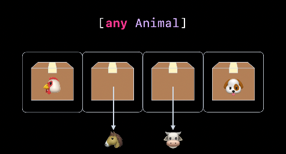

[WWDC22] Design protocol interface in Swift
WWDC22 - Design protocol interface in Swift
WWDC22 - Swift 제네릭의 활용 이후 연관된 세션입니다. 앞선 포스트를 보고 오시면 더 좋습니다.
구체적 타입(일반 타입) 추상화 및 프로토콜로 타입 관계를 모델링하는 몇 가지 고급 기술을 보여드리고자 합니다. 강연에서는 기존의 Swift 언어 기능과 Swift 5.7에 도입된 새로운 일부 기능을 모두 다룰 예정입니다.
강연은 크게 3가지 주제로 구성됩니다.
- Understand tpye erasure - any를 사용한 결과 타입 소거
- Hide implementation details - 불투명 결과 타입을 사용한 캡슐화
- Identify type relationships - 일반 타입 집합간의 관계를 모델링하는 방법
먼저, associatedtype 을 가진 프로토콜이 실제 타입들과 상호작용하는 방법을 알아보겠습니다.
아래 2가지 프로토콜과 4가지 구체적 타입이 있는 데이터 모델이 있습니다. Animal 프로토콜에 공통으로 사용하는 produce 메소드를 추가하겠습니다. 그리고 produce 메소드는 각자 구체적인 타입마다 만들어내는 수확물이 다릅니다.
protocol Animal {...}
struct Chicken: Animal {...}
struct Cow: Animal {...}
protocol Food {...}
struct Egg: Food {...}
struct Milk: Food {...}
이전 제네릭 활용 포스트에서 보셨듯이 이 경우 associatedtype 을 통해서 아직 정해지지 않은 produce 메소드의 return type을 임시로 정해두고 넘어갈 수 있습니다. 더욱이 associatedtype CommodityType 에 Food라는 불투명 타입을 지정할 수 있습니다.
protocol Animal {
associatedtype CommodityType: Food
func produce() -> CommodityType
}
struct Chicken: Animal {
func produce() -> Egg { ... }
}
struct Cow: Animal {
func produce() -> Milk { ... }
}
동물로 가득 찬 농장이 있다고 가정한다면, Farm의 ‘animals’ 저장 속성은 ‘any Animal‘의 이종 배열입니다.
struct Farm {
var animals: [any Animal]
func produceCommodities() -> [any Food] {
return animals.map { animal in
animal.produce()
}
}
}
any Animal 타입은 어떤 Animal 타입이라도 동적으로 저장할 수 있는 박스로 표현됩니다. 만약, 박스에 담을 수 있을 정도로 작은 사이즈면 값을 저장하고 너무 크다면 해당 값에 대한 포인터로 저장하게 됩니다. 이렇게 다양한 구체적 타입(일반 타입)에 대해 동일한 표현을 사용하는 전략을 타입 소거라고 합니다.

produceCommodities 메소드를 좀 더 뜯어보면, Farm의 프로퍼티인 [any Animal]을 받아서 produce 함수를 호출해 Food를 만들어냅니다. 런타임에 animal의 구체적인 타입이 결정되겠지만, animal의 produce가 associatedtype CommodityType 를 반환한다는 것을 Animal 프로토콜 덕분에 알고 있고 CommodityType의 상한 타입이 Food 프로토콜인 것을 알고 있어서 구체적 타입을 컴파일 타임에 알 지 못해도 컴파일이 가능하도록 합니다. 이를 연관 타입 소거(Type erasure semantics)라 합니다.
Swift 5.7에 추가된 이 연관 타입 소거 덕분에 불투명 타입을 타고 올라가 구체적 타입이 any Animal과 any Food로 대체되었습니다.
protocol Animal {
associatedtype CommodityType: Food
func produce() -> CommodityType
}
func produceCommodities() -> [any Food] {
return animals.map { animal in
animal.produce()
}
}
반면에 이전 WWDC22 Embreace swift generics 포스트를 보면 any 타입의 animal에서 eat 함수를 호출하려고 할 때 any 타입인 상태로 eat 함수를 호출 할 수 없어 some 타입의 함수로 전달 후 eat 함수를 호출했었습니다. 이는 eat 함수에서 받는 파라미터가 associatedtype이기 때문인데, 타입 소거를 통해서 구체적인 타입을 지정하지 않고 예상되는 타입만으로 사용이 가능하지만, 파라미터로 받는 associatedtype까지 컴파일 타임에 장담할 수 없기 때문에 some 타입으로 변환하고 eat 함수를 호출해야 했었습니다.
타입 소거의 경우 구체 타입(일반타입) 에서 불투명 타입으로 변환은 가능하지만, 불투명 타입에서 구체 타입으로 전환이 불가능합니다. 예를 들어서 Cow의 produce() 함수의 반환 값인 Milk를 any Food 타입으로 변환하는 것은 앞서 봤듯이 문제 없습니다. 하지만 any Animal에 Cow가 먹는 FeedType이 Hay라고 가정했을 때 Hay를 만들어 any Animal 타입인 Cow에 넣어줄 수 없습니다. 왜냐면 컴파일 시점에 Cow인지 확신할 수 없기 때문입니다.
protocol Animal {
associatedtype FeedType: AnimalFeed
func eat(_: FeedType)
}
animals.map { animal in
animal.eat(???)
}
Hide implementation details
다음으로 배고픈 동물들에게 먹이를 주기 위해서 Animal 프로토콜을 일반화해보겠습니다. Animal에 isHungry 프로퍼티를 추가하고, Farm의 hungryAnimals에서 filter를 사용해 뽑아낼 것입니다. 그런데 이렇게 뽑아낸 hungryAnimals가 feedAnimals 함수에서 한번 반복문을 돌고 바로 버려집니다. filter는 전체 animals를 한 바퀴 돌아 isHungry가 true 인 경우를 뽑아내는 고차함수인데, 동물의 수가 엄청나게 많을 경우 매번 filter를 통해서 뽑아내는 것은 비효율적입니다.
protocol Animal {
var isHungry: Bool { get }
}
struct Farm {
var hungryAnimals: [any Animal] {
return animals.filter { $0.isHungry }
}
func feedAnimals() {
for animal in hungryAnimals {
}
}
}
feedAnimals는 hungryAnimals를 한 번 반복한 다음, 즉시 이 임시 배열을 버린다는 걸 알 수 있는데요. 농장에 배고픈 동물이 많은 경우, 이는 비효율적인 방법입니다. 이러한 임시 할당을 피할 수 있는 방법 중 하나는 표준 라이브러리의 지연 계산 컬렉션 기능을 사용하는 것입니다. 지연 계산 컬렉션은 ‘filter’에 대한 호출을 ‘lazy.filter’로 대체하면 얻을 수 있습니다. 지연 계산 컬렉션은 ‘filter’에 대한 일반 호출을 통해 반환된 배열과 동일한 요소를 갖지만, 임시 할당을 피합니다.
struct Farm {
var hungryAnimals: LazyFilterSequence<[any Animal]> {
return animals.lazy.filter(\.isHungry)
}
}
Swift 표준 라이브러리에는 SequenceTpye, CollectionType 프로토콜에는 lazy 라는 연산 프로퍼티가 있으며 LazySequence, LazyCollection을 반환합니다. 이러한 방식은 map, flatMap, filter 등 고차 함수를 게으른(lazy) 방식으로 적용하는데 사용됩니다. lazy는 그 시점에 바로 로직을 적용하는게 아니라, 모든 시퀀스의 로직을 기억하고 있다가 호출될 때 한번에 적용하는 효과를 가지고 있습니다.
아래 2가지 케이스를 살펴보면 짝수인 숫자만 골라서 2를 곱하는 로직입니다. 일반적인 경우 짝수를 찾기 위해서 (filter) 1000개를 탐색하고 걸러진 500개를 map을 돌려서 탐색하기 때문에 총 호출 횟수는 1500 번 입니다.
하지만, lazy의 경우 filter 로직과 map 로직을 기억하고 있다고 한번에 적용시킵니다. 따라서 Lazy는 한번의 반복문으로 filter와 map을 한번에 적용시키기 때문에 1000번만 반복하면 충분합니다.
(1...1000)
.filter { $0 % 2 == 0 }
.map { $0 * 2 }
.count
-> 1500
(1...1000).lazy
.filter { $0 % 2 == 0 }
.map { $0 * 2 }
.count
-> 1000
하지만 보시면 이러한 방법은 animal의 정적 타입 정보를 너무 많이 숨겨버립니다. hungryAnimals가 요소 타입이 ‘any Animal’이라는 지식이 없다면 요소 타입을 전달하는 작업만 할 수 있을 뿐이고, Animal 프로토콜의 어떤 메소드도 호출할 수 없습니다.
func feedAnimals() {
for animal in hungryAnimals {
...
}
}
만약, flag로 지연 타입의 Sequence를 가져올지 추가하고 싶다면, any Collection을 사용할 수 있다.
some 키워드를 사용해 Collection을 선언하면 컴파일 타임에 한가지 타입(이 경우에는 lazyCollection)을 지정해야 하는데, flag 값으로 여러 Collection 중 하나를 반환하고 싶을 땐 any를 사용하면 된다.
// some
var hungryAnimals: some Collection<any Animal> {
return animals.lazy.filter(\.isHungry)
}
// any
var hungryAnimals: any Collection<any Animal> {
if isLazy {
return animals.lazy.filter(\.isHungry)
} else {
return animals.filter(\.isHungry)
}
}
Identify type relationships
불투명 타입 제네릭 코드 작성은 추상 타입 관계에 기반해야합니다. 연관 프로토콜을 사용하여 여러 추상 타입 간에 필요한 타입 관계를 식별하고 보장하는 방법을 살펴보겠습니다.
Animal 프로토콜에 eat 메소드를 추가할 것입니다. 그러나 Cow는 Alfalfa를 가공하여 Hay(건초)를 제공하고, Chicken은 Millet(곡물)을 가공하여 Scratch(스크래치)를 제공해야합니다.
이전 제네릭 포스트에서 만든 AnimalFeed와 Crop을 다시 사용합니다. (이전 포스트와 약간 차이가 있지만, WWDC에서도 차이가 있으므로 그대로 둡니다.)
protocol AnimalFeed {
associatedtype CropType: Crop
static func grow() -> CropType
}
protocol Crop {
associatedtype Feed: AnimalFeed
func harvest() -> Feed
}
protocol Animal {
associatedtype Feed: AnimalFeed
func eat(_ food: Feed)
var isHungry: Bool { get }
}
struct Cow: Animal {
var isHungry: Bool
func eat(_ food: Hay) {...}
}
struct Hay: AnimalFeed {
static func grow() -> Alfalfa {...}
}
struct Alfalfa: Crop {
func harvest() -> Hay {...}
}
struct Chicken: Animal {
var isHungry: Bool
func eat(_ food: Scratch) {...}
}
struct Scratch: AnimalFeed {
static func grow() -> Millet {...}
}
struct Millet: Crop {
func harvest() -> Scratch {...}
}
feedAnimal() 메소드를 하나만 구현해서 이런 Cow와 Chicken 2가지 연관 타입과 앞으로 추가될 다른 Animal 타입들까지 대응 할 수 있도록 하려고 합니다. feedAnimal에서 Animal 프로토콜의 eat 함수가 함께 호출되어야 함으로 any 타입이 아닌 some 타입으로 언박싱 하겠습니다.
struct Farm {
func feedAnimals() {
for animal in hungryAnimals {
feedAnimal(animal)
}
}
private func feedAnimal(_ animal: some Animal) {
???
}
}
우리는 feedAnimal에서 eat 함수를 호출하려면 Animal의 구체타입에 알맞은 Food를 찾아내야 합니다. 하지만 우리가 지금 알고 있는 것은 animal의 인스턴스 뿐입니다. 이게 Cow인지 Chicken인지 알 수 없습니다. 그래서 Animal 타입으로부터 거슬로 올라가야 합니다. animal의 Feed의 구체적인 타입이 무엇인지 알 수 없지만, Feed는 AnimalFeed 프로토콜을 추상 타입으로 사용하고 있는 것은 알 수 있고 AnimalFeed에는 grow를 통해서 CropType을 꺼내올 수 있는 것을 알 수 있습니다. 그리고 CropType이 Alfalfa인지 Millet인지 알 수 없지만, Crop 프로토콜의 harvest를 통해서 Feed를 꺼내 올 수 있다는 것을 알 수 있습니다.
따라서 아래와 같은 순서로 animal의 구체적인 타입이 뭔지 몰라도 해당 animal에 맞는 Feed를 꺼내 올 수 있습니다.
animal→AnimalFeed→Crop→AnimalFeed instance→aniaml eat
private func feedAnimal(_ animal: some Animal) {
let feed = type(of: animal).Feed
let crop = feed.grow()
let food = crop.harvest()
animal.eat(food)
}
따라서 아래의 경우 실제 타입의 주석을 달아보면 이렇습니다.
let feed = type(of: animal).Feed // (some Aniaml).FeedType
let crop = feed.grow() // FeedType.CropType
let food = crop.harvest() // CropType.FeedType: AnimalFeed
그런데, 이렇게해도 컴파일 에러가 발생합니다. 중첩된 associatedtype을 통해서 FeedType까지 찾아왔지만, FeedType이 Animal의 FeedType이란 것을 보장 할 수 없기 떄문입니다. 실제로 Alfalfa가 Hay를 아닌 Scratch 를 생산해도 로직 상 아무 문제 없습니다. Animal에서 바로 Feed로 찾아가는게 아닌 Feed에서 Crop으로 이동 후 Feed 인스턴스를 만들기 때문에 Animal과 Feed 인스턴스 사이에 연관성이 끊어진 것 입니다.

위의 associatedtype을 쫒아 Feed를 가져온 것은 사실 상 아래 처럼 그냥 Feed를 집어넣으려고 한 것과 동일하게 판단하는 것 입니다.

AnimalFeed의 CropTtype이 생산하는게 자신과 동일하다는 것을 보장하기 위해서 where 절을 추가할 수 있습니다.
protocol AnimalFeed {
associatedtype CropType: Crop where CropType.Feed == Self
static func grow() -> CropType
}
protocol Crop {
associatedtype Feed: AnimalFeed where Feed.CropType == Self
func harvest() -> Feed
}

덕분에 실제 타입에 주석을 달아보면 아래와 같이 associatedtype에 제약을 걸 수 있고 이 경우 컴파일러는 문제 없이 아래와 같이 타입을 추론할 수 있습니다.
let feed = type(of: animal).Feed // (some Aniaml).FeedType
let crop = feed.grow() // (some Aniaml).FeedType.CropType
let food = crop.harvest() // (some Aniaml).FeedType.CropType.FeedTyped
Wrap-up
이번 WWDC 포스트에서 정리한 내용은 다음과 같다.
- understand when you need type relationships
- 타입 소거가 가능한 경우와 타입 관계가 보장되어야 하는 경우
- Balance API with implementation details
- 기본 연관 타입을 통해서 불투명 타입과 구체적 타입의 정보를 균형있게 노출시키거나 숨길 수 있는 방법
- Identify type relationships across protocols
- 프로토콜 전반에 걸쳐 where 절을 통해서 타입간의 관계를 식별하고 보장